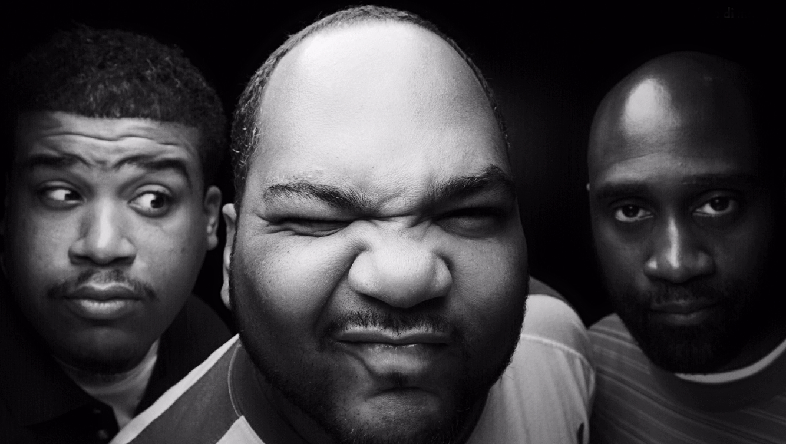
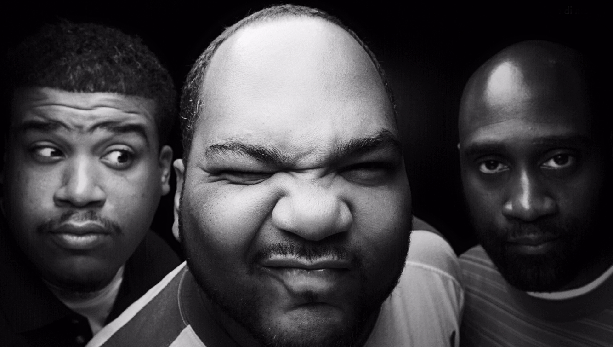

Tudo começou na Jamaica, ao contrário do que muita gente pensa. Na década de 1960, o país estava passando por uma crise econômica que estava
afetando muitas camadas da sociedade.
Nos guetos jamaicanos, a população se divertia com um aparelho novidade dos anos 50, os sound systems.
Eram como caixas de som que permitiam a música ser "mixada" por primeiros DJ's. Durante as exibições das músicas nas ruas,
algumas pessoas assumiam um microfone e faziam discursos sobre a vida no gueto, como falar sobre a violência.
Quando a situação econômica apertou mais ainda, alguns jamaicanos se mudaram para os Estados Unidos em busca de emprego.
E levaram o estilo com eles.
Nova York foi a cidade estadunidense que obteve mais imigrantes. Além dos hispânicos a comunidade negra era muito grande ali também.
No bairro do Bronx, NY, um certo jamaicano, apelidado de DJ Kool Herc começou a disseminar o que estava na moda na Jamaica.
Foi então que os jovens negros do gueto começaram a se aderir a este estilo musical, modificando um pouco do ritmo para se adequar
mais as suas falas. E foi aí que surgiu um novo estilo, o Rap.
O nome "Rap" vem da expressão "rhyme and poetry", que significa "ritmo e poesia".
Somente na década de 70 que o rap começou a se tornar comercial. Um dos primeiros a ter um disco de rap lançado Gil Scott-Heron,
que hoje é conhecido como um dos criadores do estilo.
Com o tempo o rap só se fortaleceu, pois era a melhor forma de expressão entre as camadas mais pobres da sociedade dos Estados Unidos.
E o estilo se dividiu em mais ramos, como o Gangsta Rap.
E foram surgindo novas expressões relacionadas ao rap, formando uma enorme cultura. Nas ruas era comum ver jovens dançando break,
um estilo de dança quase acrobático, ao som das batidas de rap. Batidas essas produzidas pelos DJs (disco jokers),
que usavam dos novos equipamentos da época, como as picku-ups, para criarem um som, que seria aproveitado mais tarde pelos MCs
(mestre de cerimônias). Os MCs eram os rappers, responsáveis por adicionar uma letra, quase sempre poética e sem muita melodia,
nas batidas.
Outra prática comum de se obter as batidas era através do beatbox. Com a própria boca uma pessoa mandava os sons, as batidas,
para outra pessoa começar a rimar.
Durante os anos 1980, o rap se misturou a outros estilos de música popular, como o rock e a soul music. Um dos exemplos mais bem-sucedidos desse encontro foi a canção “Rock this Way”, interpretada por Aerosmith e Run-D.M.C., em 1986. Alguns dos artistas de rap mais populares dessa época foram LL Cool J, Beastie Boys, De La Soul e o grupo Public Enemy, que se destacou por suas canções com fortes mensagens políticas.
 


Nos anos 1990, uma forma de rap conhecida como gangsta rap se tornou popular.
Canções desse gênero, interpretadas por N.W.A. e Ice-T, entre outros, falavam do uso de drogas,
das gangues e da violência nas cidades. Um dos maiores artistas do gênero gangsta rap foi Tupac Shakur,
que vendeu mais de 75 milhões de discos. Ele morreu em um tiroteio, em 1996.
Outros grupos continuaram a misturar o rap com diferentes formas de música, como os Fugees (com o reggae) e o OutKast
(com o funk). Eminem, Chris Brown, Kanye West, JAY-Z, Lil Wayne e o grupo The Black Eyed Peas são outros artistas de sucesso no rap.
No Brasil, o rap apareceu nos anos 1980, no Rio de Janeiro e, mais fortemente, em São Paulo. O movimento surgiu entre jovens da periferia.
Eles se reuniam no centro da cidade, em locais como a Estação São Bento e a Praça Roosevelt, para se expressar através do rap e do
breakdance (um estilo de dança de rua que também faz parte da cultura hip-hop). No início, os rappers eram conhecidos como tagarelas.
O grupo Racionais MCs e a dupla Thaíde & DJ Hum foram alguns dos primeiros nomes a se destacar no rap nacional. Outros artistas conhecidos
do gênero incluem Marcelo D2, Gabriel o Pensador, MV Bill, Rappin’ Hood, Emicida, Negra Li, Karol Conka e um dos artistas mais marcantes
para a história do RAP nacional, o eterno Sabotage (Maestro do Canão).